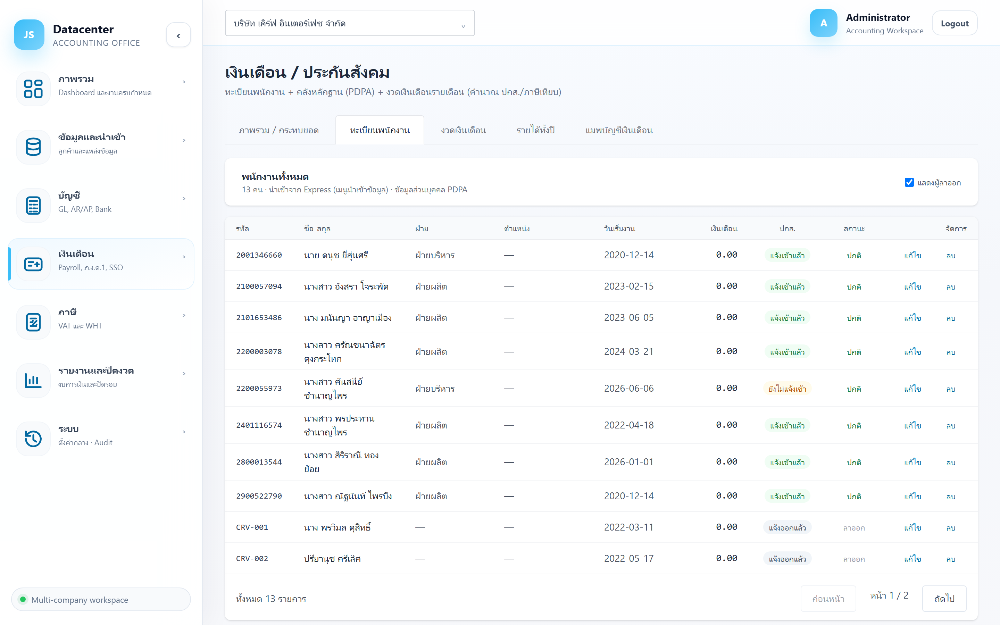
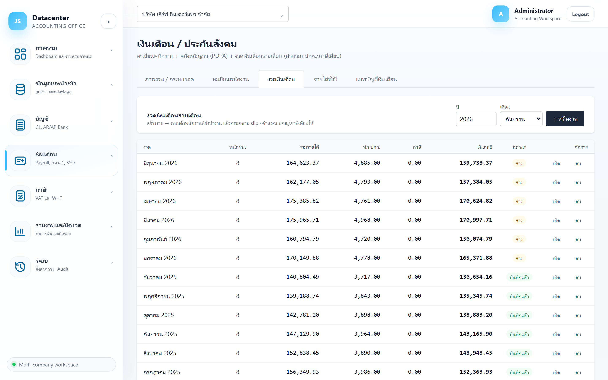
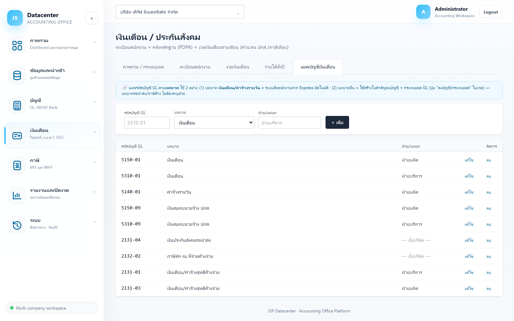

เงินเดือน / ประกันสังคม
ทะเบียนพนักงาน (ข้อมูลส่วนบุคคล PDPA) · งวดเงินเดือนรายเดือน · การกระทบยอด 3 ทาง (slip ↔ ระบบคำนวณ ↔ GL/แบบที่ยื่น) และการลงบัญชีเงินเดือนเข้า GL
เมนู เงินเดือน, ภ.ง.ด.1 และ ประกันสังคม ในโปรแกรมเปิดหน้าจอเดียวกัน แค่เด้งไปคนละแท็บ — หน้านี้อธิบายภาพรวมและงานเงินเดือน · แบบภาษีอยู่ที่ ภ.ง.ด.1 · งานประกันสังคมอยู่ที่ ประกันสังคม
1. การเข้าใช้งานและ 5 แท็บ
- เลือกบริษัทลูกค้า ที่แถบด้านบน
- เปิดเมนู เงินเดือน → เงินเดือน
| แท็บ | ใช้ทำอะไร |
|---|---|
| ภาพรวม / กระทบยอด | สถานะรายเดือนทั้งปี + การตรวจสอบ 3 ทาง (แท็บเริ่มต้น) |
| ทะเบียนพนักงาน | ข้อมูลพนักงาน + เอกสารหลักฐาน + การแจ้งเข้า-ออก ปกส. |
| งวดเงินเดือน | สร้างและกรอกงวดรายเดือน + ลงบัญชี + ออกแบบยื่น |
| รายได้ทั้งปี | สรุปรายได้รายคนทั้งปี + ภ.ง.ด.1ก + 50 ทวิ + กท.20ก (ดู ภ.ง.ด.1) |
| แมพบัญชีเงินเดือน | ผูกบัญชี GL กับบทบาทเงินเดือน — ตั้งก่อนใช้งานจริง |
2. แท็บ “ภาพรวม / กระทบยอด”

การ์ดสรุป 4 ใบ
| การ์ด | ความหมาย |
|---|---|
| เดือนที่บันทึกแล้ว | มีงวดเงินเดือนกี่เดือนจาก 12 เดือน |
| รายได้รวมทั้งปี | ผลรวมรายได้ของทุกงวดในปีนั้น |
| ปกส.รวม (ลูกจ้าง+นายจ้าง) | เงินสมทบประกันสังคมทั้งสองฝ่ายรวมกัน |
| ภาษีหัก ณ ที่จ่ายรวม | ภาษีที่หักจากพนักงานทั้งปี |
กล่องกระทบยอด 3 ทาง — หัวใจของหน้านี้
สีเขียว = ผ่าน · สีเหลือง = ต้องตรวจ
| กล่อง | ตรวจอะไร |
|---|---|
| ① slip ↔ ระบบคำนวณ (ปกส.) | เทียบเงินสมทบ ปกส. ที่ หักจริงตาม slip กับ ยอดที่ระบบคำนวณ — ผ่านเมื่อคลาดเคลื่อนปัดเศษน้อยกว่า 2 บาท |
| ② เงินเดือน ↔ GL (ใบสำคัญ) | ใบสำคัญลงบัญชีเงินเดือนต้องดุล (เดบิต = เครดิต) ทุกเดือน |
| ③ ภาษี ↔ ภ.ง.ด.1ก | ผลรวมภาษีรายเดือนต้องเท่ากับยอดในแบบสรุปปี ภ.ง.ด.1ก |
ยอด ปกส. ที่หักใน slip ไม่ตรงกับสูตร — สาเหตุที่พบบ่อยคือกรอก slip ผิด, ใช้อัตราเงินสมทบผิดปี หรือลืมเพดานค่าจ้าง ให้เปิดงวดนั้นแล้วดูช่องที่ระบบทำเครื่องหมายว่า “ต่างจากที่คำนวณ”
แถบสถานะการยื่น
บรรทัดเดียวสรุปว่ายื่นอะไรไปแล้วบ้าง — ยื่น ปกส. กี่เดือน · ได้ใบเสร็จกี่เดือน · ภ.ง.ด.1ก กี่ราย · 50 ทวิ เงินเดือนกี่ฉบับ · กท.20ก กี่ลูกจ้าง พร้อมป้ายบอกว่ายื่นแล้วหรือยัง
ตารางรายเดือน
| คอลัมน์ | ความหมาย |
|---|---|
| เดือน / สถานะ | สถานะงวด: ร่าง (ยังไม่ตรวจ) → ตรวจแล้ว → ยืนยัน/ปิด · เดือนที่ยังไม่มีงวดจะขึ้น “ยังไม่มีงวด” |
| พนักงาน / รายได้รวม / ปกส. (ลจ.) / ภาษี | ยอดของเดือนนั้น |
| slip↔ระบบ | ส่วนต่างเงินสมทบของเดือนนั้น — ตัวเลขสีส้มคือมีส่วนต่าง |
| ยื่น ปกส. / ใบเสร็จ / ภ.ง.ด.1 | ✓ = ทำแล้ว · – = ยังไม่ทำ |
| ส่วนต่าง GL | ผลต่างระหว่างยอดเงินเดือนกับที่ลงใน GL ของเดือนนั้น |
3. แท็บ “ทะเบียนพนักงาน”

ระบบ ดึงพนักงานจาก Express อัตโนมัติตอนนำเข้าข้อมูล (อ่านจากเอกสารเงินเดือนใน Express) — เงื่อนไขคือต้องแมพบัญชี GL บทบาท “เงินเดือน/ค่าจ้างรายวัน” ไว้ก่อน (ดูข้อ 6) ส่วนพนักงานที่ Express ไม่มี เพิ่มเองได้ด้วยปุ่ม + เพิ่มพนักงาน
ฟอร์มข้อมูลพนักงาน
| กลุ่มข้อมูล | ช่อง |
|---|---|
| ข้อมูลตัวบุคคล | รหัสพนักงาน*, เลขบัตรประชาชน, คำนำหน้า, ชื่อ*, นามสกุล, วันเกิด, สถานภาพ, ที่อยู่ |
| การทำงาน | ตำแหน่ง, ฝ่าย, วันเริ่มงาน*, วันลาออก, สถานะ (ปกติ / ลาออก) |
| ค่าจ้าง | ประเภทค่าจ้าง (รายเดือน / รายวัน), เงินเดือน/ฐาน หรือค่าจ้างรายวัน |
| ประกันสังคม / ภาษี | เลขผู้ประกันตน, โรงพยาบาล ปกส., เลขผู้เสียภาษี |
| เอกสาร / หลักฐาน (PDPA) | แนบสำเนาบัตร สัญญาจ้าง ฯลฯ เก็บผูกกับพนักงานรายนั้น |
| การแจ้งเข้า-ออก ประกันสังคม | บันทึกว่าแจ้งเข้า/แจ้งออกกับ ปกส. เมื่อไร (ดู ประกันสังคม) |
ทะเบียนนี้เก็บเลขบัตรประชาชน วันเกิด ที่อยู่ และเอกสารแนบของพนักงาน ให้สิทธิ์เข้าถึงเฉพาะผู้ที่ต้องใช้จริง และอย่าส่งออกไฟล์ออกนอกสำนักงานโดยไม่จำเป็น ทุกการแก้ไขถูกบันทึกใน ประวัติการใช้งาน
4. แท็บ “งวดเงินเดือน”

| คอลัมน์ | ความหมาย |
|---|---|
| งวด | เดือน/ปีของงวด |
| พนักงาน | จำนวนคนในงวดนั้น |
| รวมรายได้ / หัก ปกส. / ภาษี / เงินสุทธิ | ยอดรวมของงวด |
| สถานะ | ร่าง → บันทึกแล้ว → ปิดงวด |
| เปิด / ลบ | เปิดตารางกรอกงวดนั้น หรือลบงวดทิ้ง |
4.1 สร้างงวด
เลือก ปี และ เดือน แล้วกด + สร้างงวด — ระบบดึงพนักงานที่ยังทำงานอยู่มาตั้งเป็นแถวให้
4.2 กรอกข้อมูลในงวด (Template Excel)

ดาวน์โหลด Template → กรอกใน Excel → อัปโหลด · แก้ไขทีหลังทำโดยอัปโหลดไฟล์ใหม่ทับ · คอลัมน์รหัสพนักงานห้ามแก้ เพราะใช้จับคู่คน
| ปุ่มในงวด | หน้าที่ |
|---|---|
| ⬇ ดาวน์โหลด Template | ได้ไฟล์ Excel ที่มีรายชื่อพนักงานพร้อมกรอก |
| อัปโหลดไฟล์ใหม่ทับ | นำไฟล์ที่กรอกแล้วกลับเข้าระบบ (ทับข้อมูลเดิมทั้งงวด) |
| 📒 ลงบัญชี/กระทบยอด | สร้างใบสำคัญลงบัญชีและเทียบกับ GL (ดูข้อ 5) |
| 📋 สปส.1-10 | แบบนำส่งเงินสมทบของงวดนั้น (ดู ประกันสังคม) |
| ⬇ ภ.ง.ด.1 (TXT) | ไฟล์ยื่น ภ.ง.ด.1 ของงวดนั้น (ดู ภ.ง.ด.1) |
| บันทึกแล้ว / กลับเป็นร่าง | เปลี่ยนสถานะงวด |
ตัวเลขที่กรอกคือ ยอดจริงตาม slip ส่วนที่ระบบคำนวณ (ปกส./ภาษี) เป็นตัว เทียบตรวจสอบ — ช่องที่ต่างจากที่คำนวณจะถูกทำเครื่องหมายว่า “ต่างจากที่คำนวณ” ให้ไปตรวจ หัวตารางบอกอัตรา ปกส. และเพดานค่าจ้างที่ใช้อยู่ด้วย
5. ลงบัญชีเงินเดือนเข้า GL
ปุ่ม 📒 ลงบัญชี/กระทบยอด ในงวด จะแสดงใบสำคัญที่ระบบสร้างให้ พร้อมเทียบกับยอดที่มีอยู่ใน GL แล้ว
| คอลัมน์ | ความหมาย |
|---|---|
| บัญชี | บัญชี GL ตามที่แมพไว้ — ขึ้น “— ยังไม่แมพ —” ถ้ายังไม่ได้ตั้ง |
| รายการ / ฝ่าย | บทบาทของรายการและฝ่ายที่เกี่ยวข้อง |
| เดบิต / เครดิต | ยอดในใบสำคัญ — ต้องรวมแล้วเท่ากัน |
| GL เดือนนี้ | ยอดที่มีอยู่จริงในบัญชีนั้นของเดือนนั้น |
| ผลต่าง | ส่วนต่างระหว่างใบสำคัญกับ GL — ควรเป็นศูนย์ |
6. แท็บ “แมพบัญชีเงินเดือน” (ตั้งก่อนใช้งาน)

- บทบาท เงินเดือน / ค่าจ้างรายวัน = ใช้บอกระบบว่าบัญชีไหนคือบัญชีเงินเดือน → ระบบจึงดึงพนักงานจาก Express ได้อัตโนมัติ (ถ้าไม่แมพ จะไม่มีพนักงานเข้ามาเลย)
- บทบาทอื่น = ใช้สร้างใบสำคัญลงบัญชีและกระทบยอด GL
| ช่อง | คำอธิบาย |
|---|---|
| รหัสบัญชี GL | รหัสบัญชีในผังบัญชี เช่น 5310-01 |
| บทบาท | เงินเดือน · ค่าจ้างรายวัน · เบี้ยเลี้ยง/OT/โบนัส · เงินสมทบนายจ้าง ปกส. · ค่าล่วงเวลา · ค่าที่พัก · ค่าอาหาร · เบี้ยขยัน · โบนัส · เงินประกันสังคมรอนำส่ง · ภาษีหัก ณ ที่จ่ายค้างจ่าย · หักจากพนักงาน · เงินเดือนสุทธิค้างจ่าย |
| ฝ่าย/แผนก | ระบุถ้าต้องแยกบัญชีตามฝ่าย — บทบาท เงินประกันสังคมรอนำส่ง และ ภาษีหัก ณ ที่จ่ายค้างจ่าย ไม่ต้องระบุฝ่าย |
7. ลำดับงานเงินเดือนประจำเดือน
- ครั้งแรกครั้งเดียว — แมพบัญชี GL ให้ครบทุกบทบาทที่ใช้
- นำเข้าข้อมูลจาก Express — ได้ทะเบียนพนักงานและงวดเงินเดือนมาเป็น “ร่าง”
- ตรวจงวด — เปิดงวดนั้น ดูช่องที่ระบบทำเครื่องหมายว่าต่างจากที่คำนวณ
- ลงบัญชี/กระทบยอด — ตรวจว่าใบสำคัญดุลและไม่ต่างจาก GL
- ยื่นแบบ — สปส.1-10 และ ภ.ง.ด.1 ของเดือนนั้น
- ปิดงาน — เปลี่ยนสถานะงวด และปิดงานที่ Dashboard
8. ปัญหาที่พบบ่อย
| อาการ | สาเหตุและวิธีแก้ |
|---|---|
| ไม่มีพนักงานเลย ทั้งที่นำเข้าแล้ว | ยังไม่ได้แมพบัญชีบทบาท “เงินเดือน/ค่าจ้างรายวัน” — ตั้งที่แท็บแมพบัญชี แล้วนำเข้าใหม่ |
| กล่อง ① ขึ้นเหลือง มีส่วนต่าง ปกส. | ยอดใน slip ต่างจากสูตร — ตรวจอัตราเงินสมทบของปีนั้นและเพดานค่าจ้าง (ตั้งค่ากลางที่เมนูระบบ) หรือแก้ยอดใน Template แล้วอัปโหลดทับ |
| ใบสำคัญไม่ดุล / มีบรรทัด “ยังไม่แมพ” | ยังแมพบัญชีไม่ครบทุกบทบาทที่ใช้ในงวดนั้น |
| อัปโหลด Template แล้วข้อมูลไม่เข้า | คอลัมน์รหัสพนักงานถูกแก้หรือหายไป — ดาวน์โหลด Template ใหม่แล้วกรอกทับ |
| แก้ตัวเลขในงวดโดยตรงไม่ได้ | ตั้งใจให้แก้ผ่านไฟล์เท่านั้น เพื่อให้มีไฟล์ต้นทางตรวจย้อนหลังได้ — อัปโหลดไฟล์ใหม่ทับ |